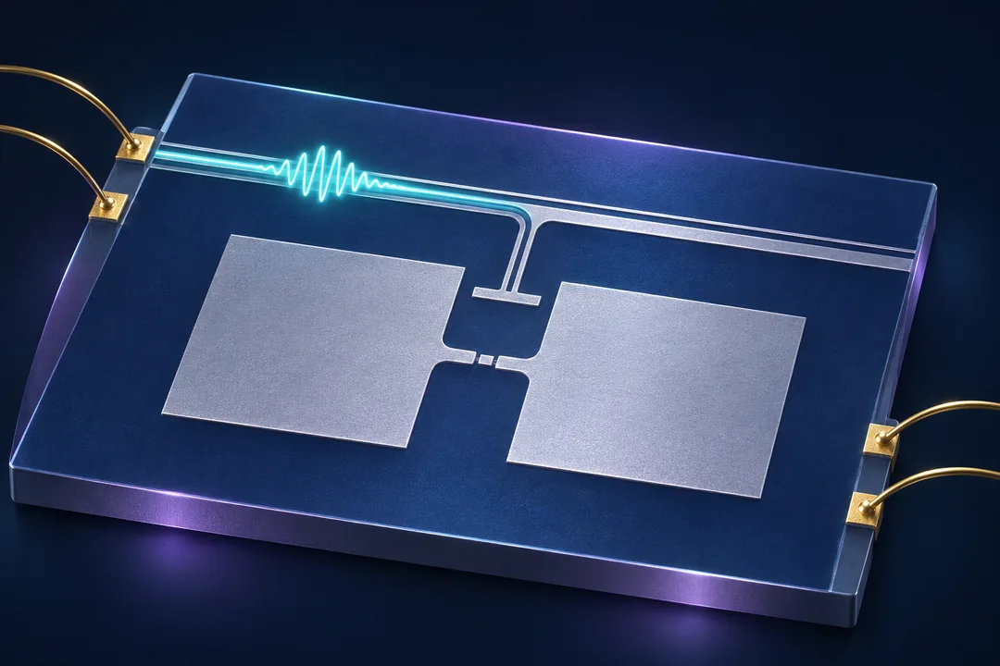
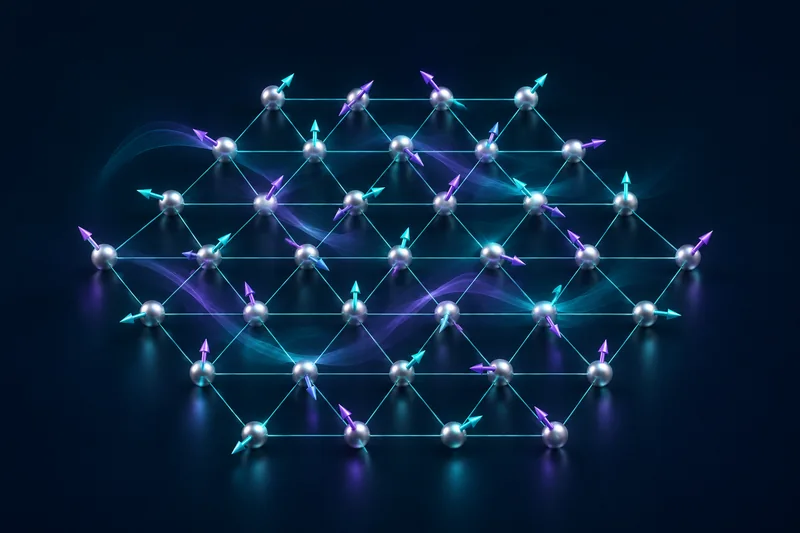
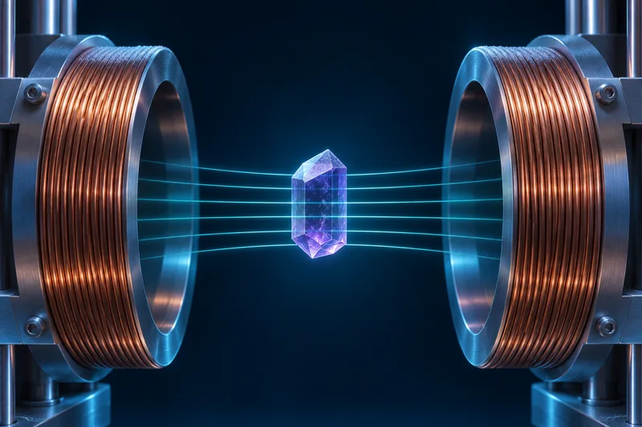
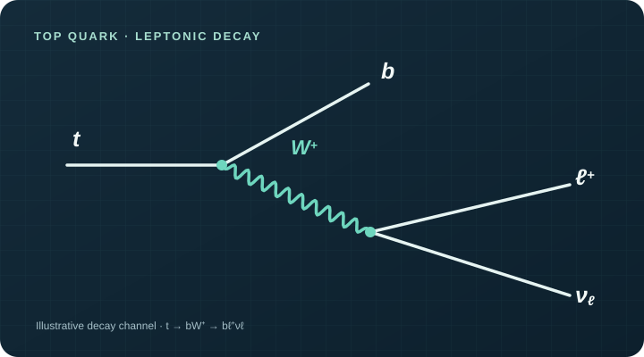

Superconducting transmons & qubit control
I’m developing a theoretical model of a superconducting transmon to study its response to control pulses and how control errors affect its dynamics.
The broader research direction is to map suitable materials for superconducting transmon qubits, fabricate and characterize a transmon chip, and design a qubit control RFIC. These experimental and circuit design stages are planned next steps.
Current stage: theoretical modeling.
Research background ↗

TlYbS₂ quantum material
Contributed to crystal growth and low temperature characterization of a triangular lattice quantum spin liquid candidate. The collaboration studies its magnetic and thermodynamic response.
Read the preprint ↗
Rare earth trihalide magnetism
Analyzed magnetic response at low temperatures and across applied fields, including DC and AC susceptibility measurements. Presented this research at the APS Global Physics Summit 2026.
Research background ↗
Top quark decay analysis
Built Python analysis routines for simulated CMS particle data and studied decay channels through selected kinematic distributions.
Research background ↗Devices, circuits, and quantum control
At Northeastern, my current focus is theoretical transmon modeling, with a longer-term goal of connecting quantum-device physics, fabrication, and RFIC control. I’ll add results and designs here as the work progresses.
Follow my updates ↗